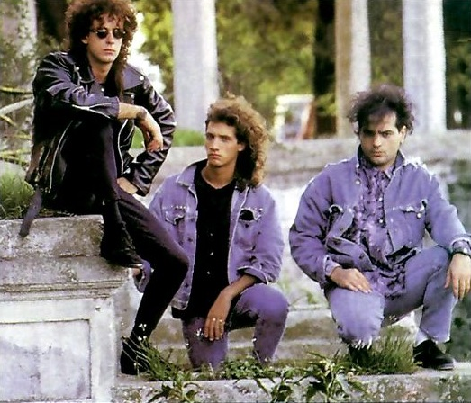
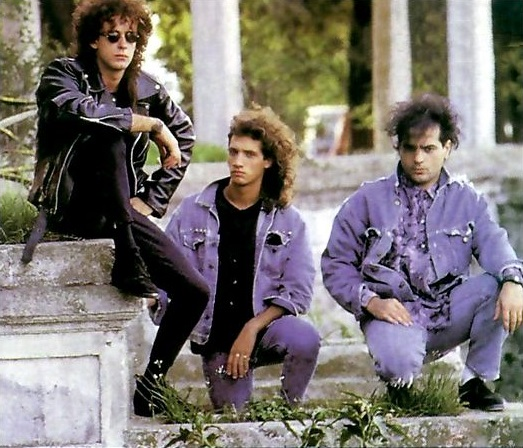

Conoce a Soda Stereo
La mejor banda de la historia
Soda Stereo fue una banda argentina de rock formada originalmente en Buenos Aires en 1982 por Gustavo Cerati (voz, guitarra), Héctor «Zeta» Bosio (bajo) y Carlos Alberto Ficicchia «Charly Alberti» (batería). Es considerada por la crítica especializada como la más importante, popular e influyente de las bandas en español de todos los tiempos y una leyenda de la música latina. Fueron el primer grupo de habla hispana en conseguir un éxito masivo en Latinoamérica y tuvieron un papel muy importante en el desarrollo y la difusión del rock iberoamericano y el rock en español durante las décadas de 1980 y 1990. Durante su carrera, fueron vanguardistas y marcaron tendencia en Latinoamérica, en la que protagonizaron diversos géneros como la música divertida de sus inicios, la new wave, el dark, el hard rock, el rock alternativo y el rock electrónico de sus finales.
 
En 1995 la banda ganó en los Premios Konex el Diploma al Mérito por su destacada trayectoria en la música argentina durante la década y el Premio Konex de Platino a la mejor banda de rock argentino de la década. En 2002 recibieron el Premio Leyenda de MTV Latinoamérica por su trayectoria musical, el primero que entregó la entidad. En 2006 la revista estadounidense Al Borde publicó una lista con las 500 mejores canciones del rock iberoamericano, premiando sus canciones «De música ligera» (N°1, siendo así considerada la mejor canción de toda la historia del rock iberoamericano), «Persiana americana» (N.º 7), «En la ciudad de la furia» (N°46), «Cuando pase el temblor» (N°84), «Zoom» (N°129), «Signos» (N°178), «Ella usó mi cabeza como un revólver» (N°206), «Trátame suavemente» (N°417), «Primavera 0» (N°422) y «Un misil en mi placard» (N°444). En 2002 la revista Rolling Stone Argentina y el canal MTV publicaron una lista con las mejores 100 canciones del rock argentino, premiando sus canciones «De música ligera» (N.º 4), «Persiana americana» (N°31), «En la ciudad de la furia» (N°48) y «Cuando pase el temblor» (N°68). En 2007 el sitio Rock.com.ar lanzó una lista con las mejores 100 canciones de la historia del rock argentino, premiando sus canciones «De música ligera» (N.º 4), «Te hacen falta vitaminas» (N°74) y «Nada personal» (N°75). En 2011 el diario argentino La Nación lanzó una lista con los mejores videoclips del rock argentino, premiando el suyo de «En la ciudad de la furia» (N°1, siendo así considerado como el mejor videoclip de toda la historia del rock argentino). Los videos de «En la ciudad de la furia» y «Ella usó mi cabeza como un revólver» fueron finalista y ganador respectivamente del entonces único premio MTV a la música latina. El video de «Cuando pase el temblor» fue nominado finalista del 12.° World Festival of Video and TV en Acapulco. En 2006 la revista estadounidense Al Borde publicó una lista con los 250 mejores álbumes del rock iberoamericano, premiando sus álbumes Canción animal (Nº2), Comfort y música para volar (N°15), Signos (N°40) y Sueño Stereo (N°41). En 2012 la revista Rolling Stone EEUU lanzó una lista con los 10 mejores álbumes del rock latinoamericano, premiando su álbum Sueño Stereo (N.º 4). En 2007 la revista Rolling Stone Argentina publicó una lista con los 100 mejores álbumes del rock argentino, premiando sus álbumes Canción Animal (N.º 9) y Signos (N°25). En 2007 también publicó otra lista con los 10 mejores álbumes en vivo del rock argentino, premiando su álbum Ruido Blanco (N°5).